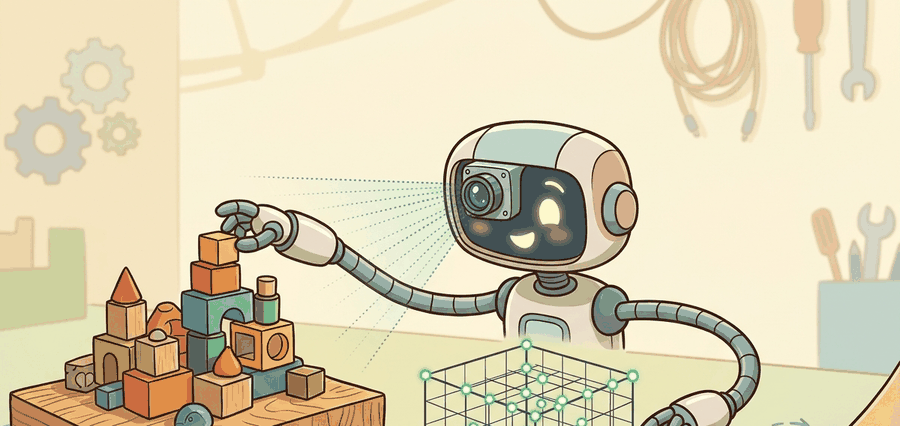

For Point clouds and depth maps, geometry earns its place when it changes reachability, clearance, grasping, exploration, or recovery in the log.
A Patient Embodied AI Agent

Point clouds and depth maps provides the simplest bridge from image coordinates to spatial measurements. A depth map stores distance per pixel; a point cloud turns those pixels into metric samples that planners, mappers, and grasp modules can consume.
Problem First: Why This Representation Exists
For point clouds and depth maps, audit depth holes, registration error, voxel size, outlier removal, normal estimation, and frame transforms. The action evidence is whether those choices changed grasp, collision, or clearance decisions.
For point clouds and depth maps, audit depth holes, registration error, voxel size, outlier removal, normal estimation, and frame transforms. The action evidence is whether those choices changed grasp, collision, or clearance decisions. Treat the representation as a typed state estimate, not as a visualization.
For Point clouds and depth maps, the representation is embodied only when it changes an admissible action, safety margin, exploration request, or recovery path.
Figure 28.2.1 should be read as the Point clouds and depth maps handoff diagram: sensor evidence, geometric representation, uncertainty, latency, and action consumer are separate failure points.
Mathematical Core
Back-projection converts each valid depth pixel into a 3D point in the camera frame.
$P_c(u,v)=z(u,v)K^{-1}[u,v,1]^T,\quad P_w=T_{wc}P_c$
The camera intrinsics $K$ define the ray for each pixel. The transform $T_{wc}$ moves the point into the world or robot frame, where it can be merged, filtered, and queried by action modules.
- Validate depth units and reject invalid pixels.
- Back-project pixels through camera intrinsics.
- Transform camera-frame points into the robot or world frame.
- Downsample, remove outliers, estimate normals, and publish the cloud with timestamp metadata.
| Design Choice | Use When | Control Risk |
|---|---|---|
| Voxel downsample | Large clouds need real-time processing | Too coarse a voxel hides thin obstacles. |
| Outlier removal | Noisy sensors or reflective surfaces | Aggressive filters remove small task-relevant objects. |
| Normal estimation | Grasping, placement, surface following | Normals become unstable on sparse or mixed surfaces. |
Worked Miniature
Code Fragment 28.2.1 back-projects a 2 by 2 depth map into four 3D points. This tiny array is the same math Open3D applies to thousands of pixels.
# Back-project a tiny depth map into camera-frame points.
# Each pixel becomes one metric sample after applying intrinsics.
import numpy as np
depth = np.array([[1.0, 1.2], [0.9, 1.1]])
fx = fy = 500.0
cx = cy = 0.5
points = []
for v in range(depth.shape[0]):
for u in range(depth.shape[1]):
z = depth[v, u]
x = (u - cx) * z / fx
y = (v - cy) * z / fy
points.append((round(x, 4), round(y, 4), round(float(z), 2)))
print(points)These expected output samples are nearly centered laterally, so the main variation is depth, not horizontal spread. That is the interpretation to carry into planning: the cloud suggests a mostly frontal surface patch whose geometry changes along z by about 30 cm.
Open3D creates point clouds from RGB-D images in a few lines and handles vectorized storage, visualization, and many filters. Keep the hand calculation in mind, because most point-cloud bugs are still unit, intrinsics, or transform bugs.
A point cloud is a sample, not a solid object. Empty space between samples may be free, unseen, filtered out, or outside the sensor range.
A bin-picking system can voxel-downsample a point cloud for speed, but it should keep a high-resolution crop around the planned grasp contact so thin edges and handles are not erased.
For Point clouds and depth maps, the perception result must answer what action changed, what uncertainty changed, and what log would reproduce the decision. Otherwise the output is still visualization, not embodied evidence.
Debugging And Evaluation
For Point clouds and depth maps, evaluate the representation inside the consuming action loop with calibration, frame transform, representation version, latency, selected action, and failure label.
For Point clouds and depth maps, perturb exactly one geometric assumption, such as depth dropout, scale, occlusion, pose drift, motion, or calibration, then record the action change.
Point clouds remain central because they are simple and actionable, even as neural fields and splats improve rendering. Current systems often combine point clouds for control with richer scene representations for memory and visualization.
Section 28.3 extends individual point clouds into multi-view scene reconstruction, where object identity, pose uncertainty, and persistent state must survive across changing viewpoints.
Section References
Open3D. RGB-D image tutorial. https://www.open3d.org/docs/release/tutorial/geometry/rgbd_image.html
Shows how maintained tooling converts RGB-D images into point clouds.
OpenCV. Camera calibration and 3D reconstruction documentation. https://docs.opencv.org/4.x/d9/d0c/group__calib3d.html
Defines the camera model needed for back-projection and frame transforms.
Can you name the representation, the consuming action, the uncertainty or freshness field, and the failure label for Point clouds and depth maps? If any one is missing, the section is not yet ready for a robot replay log.
Depth maps become useful for robotics when they are back-projected, transformed, filtered, timestamped, and tied to the action that will consume the cloud.
Create a 3 by 3 depth map with one invalid pixel. Describe how you would reject the invalid point, downsample the cloud, and preserve a grasp-critical edge.